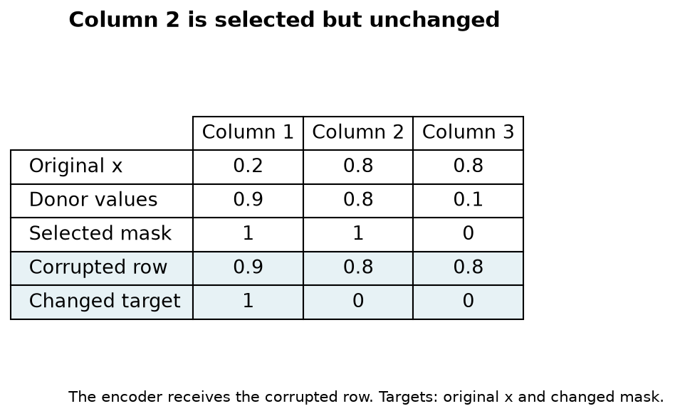
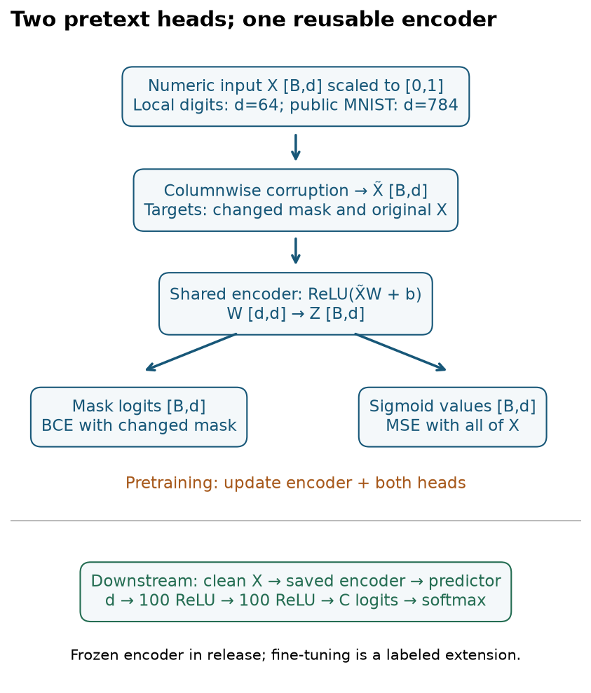
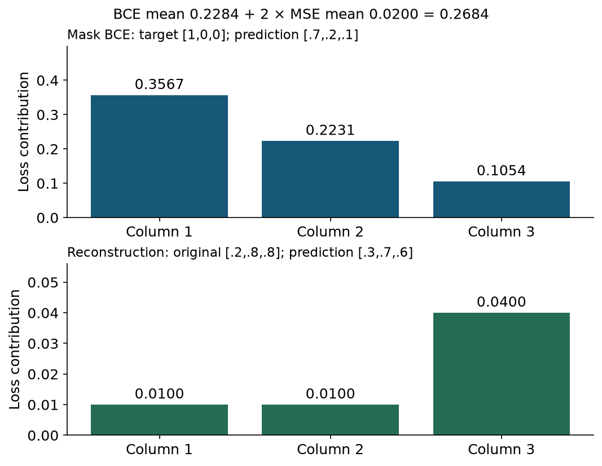
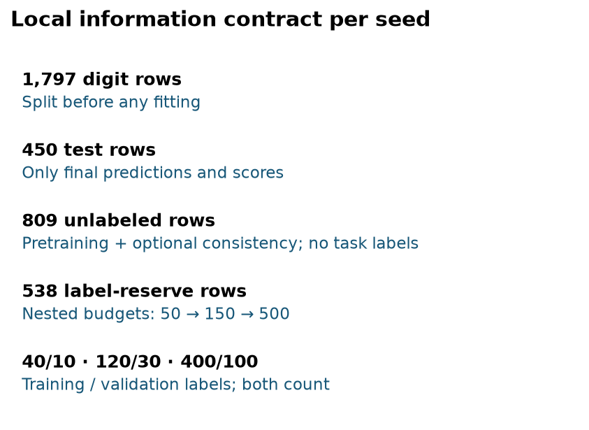
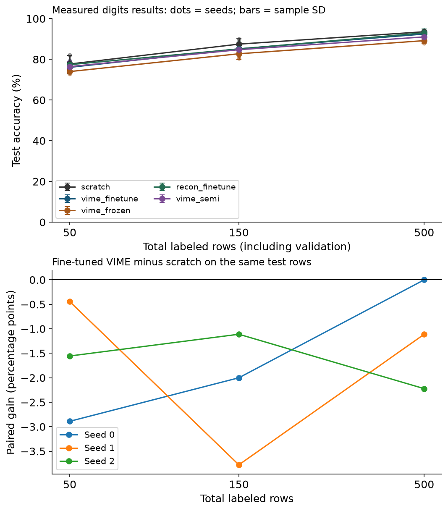

Year 2 · Quarter 4 · Lesson 071
VIME: learn from unlabeled tabular rows
Start with retrieval¶
Before reading, write three short answers: What information may a validation set influence? How does fitting a model differ from running a pretrained model? What is held fixed in a paired comparison? Then attempt the spaced questions below.
Today's skill. Train a row encoder from unlabeled features, attach a predictor, and measure how its test accuracy changes as the number of available labels grows. Your deliverable is a label-efficiency curve with a defensible comparison.
Connection to the mission. Relational pretraining also learns from information available before a target is observed. First learn exactly what single-table pretraining can extract, which supervision it receives, and how to test its benefit. This provides a stronger flat-table baseline for later relational experiments.
Route. Read the corruption and architecture sections, trace the losses, then implement the three notebook operations. Treat the experiment and its written interpretation as a second sitting if needed. Recall L070's evaluation contract as you design the comparison; L045 introduced a related pretraining idea.
1. Learn from features before asking for labels¶
In plain terms. Hide some information in a row and ask a network to recover it. The original row supplies the training answer, so this stage needs no task labels.
A feature is one input measurement, such as a balance or pixel intensity. A row contains d features. A label is the outcome we want to predict. In the local lab the label is a digit class, from 0 to 9.
Self-supervised learning constructs targets from the inputs themselves. A pretext task is this constructed learning problem. An encoder is a learned function e that maps a row x to a vector z of hidden features. A head maps z to a particular output. The encoder can serve a later task with a new head.
VIME stands for Value Imputation and Mask Estimation. Its pretraining stage has two heads: one reconstructs the original values, and one estimates which values were corrupted. Both heads train the same encoder. See Yoon et al., §4.1 and Figure 1.
Semi-supervised learning uses labeled and unlabeled rows while training the downstream predictor. VIME's semi-supervised extension asks the predictor to agree across several corrupted versions of an unlabeled row. It adds a distinct objective after encoder pretraining.
Scope check. Successful reconstruction does not establish that the representation helps the task label. Pretraining can emphasize frequent feature patterns that are irrelevant to the target. A downstream comparison is required.
2. Corrupt a value with another value from its column¶
Preserve each column's range while breaking relationships¶
A marginal distribution describes one column without conditioning on the others. An empirical marginal is the distribution of that column's observed values. VIME draws replacements from the same column. A donor for one column can come from a different row than the donor for the next column.
For each coordinate j, draw m_j from a Bernoulli distribution: it equals 1 with probability p and 0 otherwise. Draw a donor value x̄_j from column j. Construct
x̃_j = (1 − m_j) x_j + m_j x̄_j.
The tilde marks a corrupted row; the bar marks donor values. Multiplication is coordinate by coordinate. The encoder sees x̃ alone. The original x and the mask target supervise its outputs; they are not extra encoder inputs.
The released implementation constructs donors with independent column permutations. A permutation rearranges existing row indices. This allows self-donors and repeated values. It preserves the donor column's exact multiset of values; the final partially replaced column need not preserve its exact empirical counts in one draw. Across draws, replacement follows the empirical marginal. See the pinned corruption function.
Worked example: selected and changed are different¶
Take x = [0.2, 0.8, 0.8], donors [0.9, 0.8, 0.1], and selected mask m = [1, 1, 0]. The corrupted row is [0.9, 0.8, 0.8]. Column 2 was selected but received 0.8 again. Its value did not change.
The paper's equations use the sampled mask m. The release recomputes its supervised target as m_changed = (x != x̃), giving [1, 0, 0]. This lesson's implementation follows the release and names the target explicitly. Predict the result before toggling a coordinate below.

How often can this happen? Suppose a categorical column has proportions q₁, …, q_r. For a randomly drawn row and an independently sampled donor from the empirical marginal, the collision probability is the sum of q_c². The expected changed fraction is therefore p × (1 − Σ q_c²). A constant column has zero actual changes, even at p = 1. A balanced binary column changes at expected rate p/2. A finite permutation creates dependence across rows, but each donor index is marginally uniform, so this expectation still applies to the average over rows.
Why this can teach structure. If two columns usually agree, replacing one can create a mismatch. The encoder can use the other column to detect and repair it. When independent columns carry no such predictive relationship, detecting a replacement from a matching marginal is intrinsically difficult. Detection becomes uncertain; a perfect mask predictor is not always possible.
Failure case. Valid individual values can still make an implausible row together. Marginal replacement preserves column-level support, not joint constraints or the true label. This matters especially when using corrupted rows for downstream consistency.
3. Model architecture: follow one row end to end¶
In plain terms. One shared hidden vector feeds two training heads. After pretraining, keep the encoder and replace those heads with a task predictor.

Pictured variant. The numeric-data encoder and pretext heads follow the released MNIST example. The local lab uses d = 64 features from sklearn's 8×8 digits, scaled by the known maximum intensity 16. This is a smaller, different dataset from 28×28 MNIST. B denotes the number of rows in a batch. C = 10 is the number of task classes. The saved encoder expects the same d columns in the same order and with the same preprocessing. This experiment trains a separate encoder for this fixed schema.
- Corrupt a normalized matrix X of shape B×d. Produce X̃ of the same shape.
- Compute
Z = ReLU(X̃ W_e + b_e), with W_e of shape d×d and b_e of length d. ReLU replaces each negative number by zero. Z has shape B×d. The PyTorch linear layer stores the transposed weight convention. - The mask head produces d logits per row. A logit is an unbounded score converted to a probability by
sigmoid(a) = 1/(1+exp(−a)). The loss combines this transformation with binary cross-entropy for numerical stability. - The feature head maps Z to d sigmoid outputs, one reconstructed numeric value per column. The sigmoid restricts these outputs to [0,1], matching the lab's scaled inputs.
- Backpropagation computes loss derivatives through both heads into the shared encoder. An optimizer uses these derivatives to change its weights. The two heads can favor different representations; the loss weights control their relative influence.
- For downstream prediction, send the clean row through the encoder, then two 100-unit ReLU layers and a C-logit output layer. Softmax converts the C logits to class probabilities whose sum is one. Only this encoder-plus-predictor path is needed at inference. For class c with logit a_c, softmax assigns
exp(a_c) / Σ_k exp(a_k). Task cross-entropy is the negative logarithm of the probability assigned to the observed class, averaged over labeled rows.
The released vime_self.py uses a single hidden encoder layer of width d. The paper's supplement §5 explores broader architectures and tuning. A checked small network does not cover that search.
Frozen transfer and fine-tuning answer different questions¶
A frozen encoder keeps all pretrained encoder parameters fixed. Only the new task head learns. This is how the released downstream pipeline uses encoder.predict.
Fine-tuning also updates encoder parameters with the task loss. It asks whether pretraining supplies a useful initialization. The curriculum calls for this comparison, so the lab includes it as an explicit extension. It records encoder parameter changes to verify that frozen and fine-tuned paths behave as declared.
The scratch control uses the same encoder-plus-head architecture, but starts with random encoder weights and learns only from task labels. Its task head, supervised batch sequence, validation rows and epoch budget match the fine-tuning arm. Pretraining adds computation and unlabeled-data access; the experiment matches labeled resources, not total compute.
Scope check. The paper lists a two-layer perceptron as its supervised-only baseline. Our scratch control retains the additional randomly initialized encoder layer to match the pretrained arm's capacity. It is a controlled initialization comparison, not a reimplementation of that baseline row.
4. Derive the two pretext losses¶
Mask estimation: assign probability to each actual-change target¶
In plain terms. Penalize a confident mask prediction when it assigns low probability to the correct target bit.
Let t_j be the actual-change target and q_j the predicted change probability. For one row,
L_mask = −(1/d) Σ_j [t_j log(q_j) + (1−t_j) log(1−q_j)].
Here log is the natural logarithm and Σ adds the d coordinate terms. If t_j = 1, only −log(q_j) remains. If t_j = 0, only −log(1−q_j) remains. Average again over B rows in a batch. Each coordinate contributes equally.
Worked example. Target [1,0,0] and predicted probabilities [0.7,0.2,0.1] give terms [0.3567,0.2231,0.1054]. Their mean is approximately 0.2284. These are illustrative predictions, not trained-model outputs.
Value reconstruction: recover the entire original row¶
Let r_j be the reconstruction. The numeric reconstruction objective is
L_value = (1/d) Σ_j (r_j − x_j)².
For x = [0.2,0.8,0.8] and r = [0.3,0.7,0.6], squared errors are [0.01,0.01,0.04]. Their mean is 0.02. Every coordinate contributes, including both unchanged coordinates. Multiplying the loss by the mask would define a different objective.
Combine the losses as L_pretrain = L_mask + α L_value. The scalar α controls the reconstruction weight; α = 2 gives 0.2284 + 2×0.02 = 0.2684 in the worked example. The implementation uses mean reductions in both terms, so changing d does not by itself multiply one term's weight.

A misleading diagnostic. If only 15% of cells actually change, always predicting unchanged gives 85% mask accuracy. Compare the loss and predictions with this constant baseline before claiming mask detection is good. The training loss alone also cannot establish generalization because it uses the fixed corruption bank.
Why two heads? Reconstruction encourages recovery of original content. Mask estimation encourages recognizing inconsistent combinations. Removing mask loss creates the lab's reconstruction-only ablation. Comparing it with dual-task pretraining tests whether the extra objective helps under this particular protocol.
Categorical features. A category is a discrete alternative with no meaningful numerical distance between its arbitrary ID codes. The paper describes categorical reconstruction with cross-entropy. A mixed-type extension needs an appropriate categorical output distribution and masking convention per feature. The supplied lab handles scaled numeric inputs only; applying its MSE directly to category IDs would impose an arbitrary geometry.
Boundary predictions. At p = 0, reconstruction becomes ordinary autoencoding and every mask target is zero. At p = 1, selected replacements can still collide, and little original information may remain. The lab fixes p = 0.3 in advance. Tuning p against the test curve would spend test information.
5. Add semi-supervised consistency carefully¶
Create K independently corrupted views of the same unlabeled batch. Each has shape B×d. Pass each through the frozen encoder and trainable predictor to obtain logits A with shape K×B×C. A view is one such corruption of the original examples; row i must refer to the same original row across all K views.
The released vime_semi.py computes
L_consistency = mean_(i,c) [ (1/K) Σ_k (A_kic − mean_k A_kic)² ].
The divisor is K, not K−1: this is population variance over generated views. With K = 1 it is zero. Compute variance across the view axis, then average rows and classes. Variance across rows would instead push different examples toward a common answer.
The predictor objective is L_task + β L_consistency. The task term is cross-entropy on labeled clean rows. β controls consistency strength. The release measures consistency on logits, before softmax; replacing them with probabilities changes the objective and its scale.
Worked example: clean-reference loss and view variance¶
For one output coordinate, take augmented logits 0.2 and 0.6. Their mean is 0.4. View variance is [(0.2−0.4)²+(0.6−0.4)²]/2 = 0.04.
The paper's Eqs. 9–10 write squared difference from the clean prediction. If its value is 0.8, that loss is [(0.2−0.8)²+(0.6−0.8)²]/2 = 0.20. For any fixed clean value c,
mean_k (a_k−c)² = variance_k(a_k) + (mean_k(a_k)−c)².
Expand each difference as (a_k−mean(a)) + (mean(a)−c). The cross-term sums to zero because deviations from the mean sum to zero. The two objectives coincide only when the clean value equals the mean of the augmented predictions. This algebra applies to the same output coordinate and representation; switching between logits and probabilities introduces a further difference.
Failure case. If corruption removes the feature that determines the true class, demanding unchanged predictions can suppress useful task information. Small consistency loss alone is weak evidence: a constant predictor has zero view variance. Always measure supervised task performance too.
Scope check. The lab implements the release's frozen-encoder, logit-variance path. It does not silently identify that objective with the paper's clean-reference equation.
6. Measure label efficiency with an information budget¶
In plain terms. Give paired models the same labels and test examples. Let only the declared pretraining procedure change.
A label-efficiency curve plots downstream performance against the number of labels made available for fitting and choosing the model. The x-axis here counts both gradient-training labels and validation labels. An epoch is one pass over the designated training rows. Validation chooses the best epoch by cross-entropy. Test accuracy is the fraction of held-out rows whose largest-probability class equals their label.
The offline dataset has 1,797 rows and 64 numeric features. Each seed reserves 25% (450 rows) for testing. Of the remaining 1,347, 60% (809 rows) form the fixed unlabeled pool; 538 form the label reserve. No test or validation row enters self-supervised training. Unused reserve rows remain unused.
We choose nested, class-balanced labeled subsets of 50, 150 and 500 rows. Each budget uses 80% for gradient updates and 20% for validation: 40/10, 120/30 and 400/100. The selected sets are nested; the train/validation assignment is resampled within each budget. Thus cross-budget differences include that reassignment. Benchmark labels are used to stratify splits; the learner receives labels only for its designated labeled subset.

| Arm | Encoder initialization | Downstream encoder | Unlabeled task loss |
|---|---|---|---|
| scratch | Random | Updated | None |
| vime_finetune | Mask + value pretraining | Updated | None |
| vime_frozen | Mask + value pretraining | Frozen | None |
| recon_finetune | Value pretraining only | Updated | None |
| vime_semi | Mask + value pretraining | Frozen | Logit view variance |
Held fixed. Paired arms share labels, validation rows, test rows, encoder/head dimensions, head initialization, supervised batch order, and 60 downstream epochs. Self-supervised arms use 30 epochs on the same unlabeled pool. Pretraining uses one fixed corrupted bank, matching the source; semi-supervised views are regenerated. Learning rates and loss weights are declared in advance. There is no hyperparameter search.
Varied. Whether the encoder is pretrained, whether mask estimation contributes, whether the encoder is frozen, and whether downstream consistency is present. Use the specific arm pair that isolates your question: dual versus reconstruction-only fine-tuning isolates mask loss; frozen versus fine-tuned VIME changes adaptation; frozen VIME-self versus VIME-semi adds consistency.
Author-run evidence¶
Measured test accuracy, mean ± sample SD over three seeds (%). These are author-reference outputs, not your current notebook run.
| Total labels | Scratch | VIME fine-tune | VIME frozen | Reconstruction fine-tune | VIME semi |
|---|---|---|---|---|---|
| 50 | 77.70 ± 4.17 | 76.07 ± 2.96 | 74.00 ± 1.11 | 77.41 ± 1.22 | 76.44 ± 2.62 |
| 150 | 87.48 ± 2.81 | 85.19 ± 2.48 | 82.74 ± 2.90 | 85.11 ± 2.73 | 84.74 ± 2.38 |
| 500 | 93.56 ± 0.80 | 92.44 ± 1.90 | 89.19 ± 1.22 | 93.04 ± 1.86 | 91.04 ± 1.56 |
Paired fine-tuning gains (percentage points).
- 50 total labels: -2.89, -0.44, -1.56; mean -1.63.
- 150 total labels: -2.00, -3.78, -1.11; mean -2.30.
- 500 total labels: +0.00, -1.11, -2.22; mean -1.11.
Observed conclusion. Under this fixed digits recipe, fine-tuned VIME has lower mean accuracy than scratch at all three budgets. The paired gains above show the size and seed variability. This does not establish that VIME cannot help other datasets or protocols.

The figure shows each seed and means with sample standard-deviation bars. For each budget, the paired gain is fine-tuned accuracy minus scratch accuracy on that seed's shared test rows. Report all three differences, even when their signs disagree. Standard deviation summarizes this small set of split/initialization repetitions; it is not a confidence interval over new datasets.
Scope check. This is one small image-derived table, with a fixed limited training recipe. Seeds do not create independent datasets. No general tabular winner, clinical claim, or relational benefit follows from this curve. The data, architecture search, labeled/unlabeled ratios, optimizer implementation and repetitions differ from the paper; paper-table comparability is INCOMPARABLE.
Paper claim, checked code, local measurement¶
The paper evaluates label efficiency and downstream prediction across several domains (§5). Its public-data experiments include MNIST treated as 784 tabular features, Income and Blog. The supplement specifies a 10% labeled / 90% unlabeled split of the public training sets and retains their separate test sets.
A concrete paper target. Table 2 reports the following MNIST accuracies (mean ± standard deviation over ten runs): supervised-only 93.87 ± 0.14%, self-supervised-only 94.06 ± 0.19%, and full VIME 95.77 ± 0.22%. The reported self-only improvement is 0.19 percentage points; full VIME adds 1.90 points over supervised-only. These are published results on 784-feature MNIST, not measurements from this lab. Source: Table 2.
Scope check. A digits accuracy near one of these numbers is still INCOMPARABLE. The follow-up must align data, labeled/unlabeled allocation, selection, architecture and baseline definitions before numerical agreement is evidence of reproduction.
The source audit pins commit 996c58cf4c570061b30c38ecf2a754a9af85aafd. It checks exact corruption outputs against the original NumPy function on a fixture containing donor collisions. This establishes that tested operation. It does not establish historical training parity: the release uses Keras/TensorFlow, while this lab uses PyTorch and different initialization/optimizer defaults.
See source identities, local evidence, and the reproduction contract. The MNIST access check verifies the public archive against Keras's official SHA-256 and checks its shapes and scaling. Public MNIST follow-up training is NOT_RUN at package creation. Restricted genomic/clinical data, the full baseline set, and original tuning remain outside this artifact's demonstrated evidence.
7. Lab: implement, check, explain¶
The companion notebook exposes the full encoder, both heads, pretraining loop and downstream trainer. You implement three operations used by the actual training loop: columnwise corruption with actual-change targets, full-coordinate pretext loss, and view-axis consistency loss. Each has a numeric CHECK that catches a plausible wrong implementation.
Before running: predict which coordinate in the collision fixture gets a zero mask target, whether untouched coordinates affect reconstruction loss, and what K = 1 does to consistency.
EXIT submission: produce the complete five-arm × three-budget curve; list the three paired fine-tuning gains at each budget; defend whether pretraining helps under the local recipe. Identify validation-label cost, one source/paper discrepancy, and one experiment needed before transferring the conclusion to relational data. A valid result can show no gain.
Next step after EXIT. Run the same visible code on public MNIST through the gated Colab cell or the Modal operator. The reproduction contract lists every remaining protocol gap; choosing a larger preset does not remove those gaps. Compare measured results with a specifically named paper experiment only after aligning its dataset, split, metric, model selection and baselines.
Ask the tutor to review your code and your interpretation. Reading or executing the author solution does not establish mastery. Return tomorrow and derive the collision example without notes; next week, reconstruct the split diagram and explain the label budget. Lesson 072 will compare reconstruction-based learning with contrastive and multi-view objectives.
Primary reading¶
Read VIME, §4.1–4.2, Eqs. 3–10 and Figures 1–2, then inspect the pinned released implementation. Use supplement §§2, 5–6 to distinguish the example architecture from the paper's experimental search. The printable reference collects the equations and evidence boundaries.